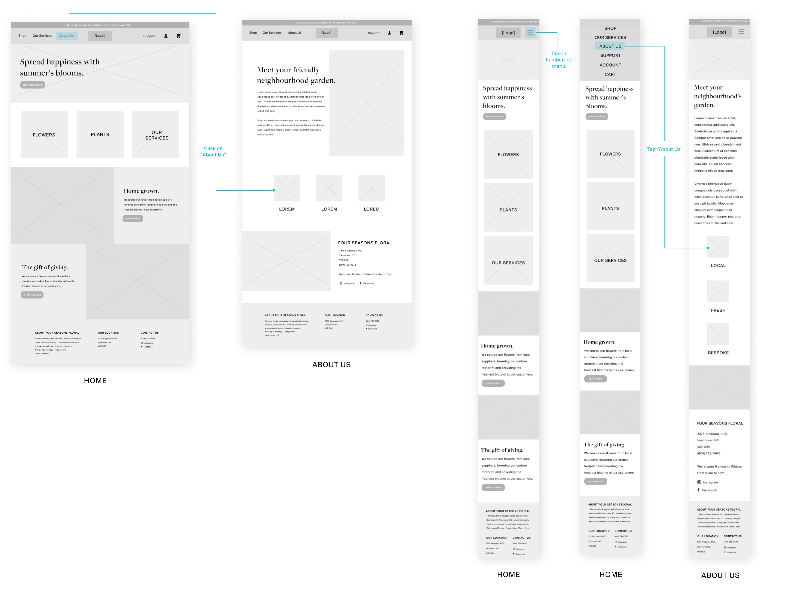

User Flows
User Tasks
- Learn about how what the company values
- Order a bouquet of flowers for a special occasion, like an anniversary
- Order a floral package for a large-scale event, like a wedding
- Find the company's address, operating hours, and contact information
- Find if a user's location is serviced for delivery
User Flow Wireframes
Task 1: Learn about what the company values

Task 2: Order a bouquet of flowers for an anniversary
Task 3: Order a floral package for a wedding.

Task 4: Find the company's address, operating hours, and contact information
Task 5: Find out if my location is serviced for delivery.

MOCK UP EXAMPLE